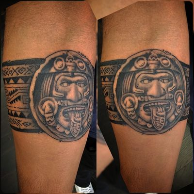
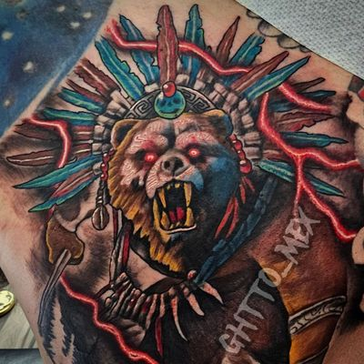

People say "I want an Aztec tattoo," and that could mean six completely different pieces. Before we talk placement or price I need to know which symbol you want and what you believe it means, because a good half of what people have been told is wrong.
Here is the straight version: what these symbols carry, where the reference actually comes from, and what makes each one work or fail on skin. I do a lot of Aztec and cultural work, and the failed pieces I get asked to fix did not fail on shading. They failed on geometry and research.
The six pieces people actually ask me for
Nearly every request lands in one of six places.
| Symbol | What it is understood to carry | What the design demands |
|---|---|---|
| The Sun Stone (the so-called Aztec calendar) | The world-ages and the cycling of time. Not a working calendar. | Flat real estate and rings that are genuinely true |
| Eagle warrior (cuāuhtli) | Rank you had to earn, courage, the sun | Correct helmet structure and counted feathers |
| Jaguar warrior (ocēlōtl) | The other elite order, paired with the eagle | Pelt texture, which eats hours |
| Quetzalcoatl, the feathered serpent | Wind, Venus, learning, the priesthood | A limb it can wrap, not a flat square |
| Huitzilopochtli and the hummingbird | Patron of the Mexica, and the fallen | Small and simplified, or large. No middle |
| Popocatépetl and Iztaccíhuatl | Devotion, grief, loyalty past death | Two figures and a landscape. Back, chest or full outer arm |
The Sun Stone is not a calendar
The carving everyone calls the Aztec calendar does not tell time. It uses calendar glyphs to talk about cycles of time, which is a different job, and you can no more read today's date off it than off a painting of a clock.
The real object is basalt, about 12 feet across, weighing about 24,600 kilograms. It carries the name glyph of Moctezuma II, putting the carving in the early 1500s, and it came out of the Zócalo in Mexico City on December 17, 1790 during work around the cathedral. The face in the middle is still argued over: Tonatiuh the sun, Tlaltecuhtli the earth, or a night-lord figure, depending which scholar you read. The four panels boxed around it are four previous world-ages, named Four Jaguar, Four Wind, Four Rain and Four Water. Around those runs the ring of twenty day signs, and the outer band is two fire serpents, xiuhcoatl, with human heads coming out of their mouths. Near the top sits the date 13 Reed, which lines up with 1479.
That should change the ask. If you wanted a calendar, you want something else. If you wanted creation and destruction on a loop, you are in the right place.
It also sets the craft problem. The stone is built on concentric rings: every ring a true circle sharing one center, the twenty day signs evenly divided. People measure that with their eyes without knowing they are doing it, because this carving is on restaurant walls and posters and album covers. If your rings wobble, or one drifts off center, or the day signs crowd on one side and stretch on the other, it reads crooked to everybody and nobody can say why. So I draw it on center lines and check the divisions before anything starts, and I push it toward flat ground: upper back, chest, outer shoulder blade, the flat of the thigh. On a round forearm a true circle photographs as an ellipse from every angle but one.

The eagle and the jaguar were ranks, not costumes
Eagle warriors (cuāuhtli) and jaguar warriors (ocēlōtl) were the two elite orders of the Aztec military, and nobody was born into them. Boys started formal training around 17, took adult standing by capturing their first prisoner alive, and reached these orders only after roughly four captives or a genuinely notable deed. The origin is worth knowing before you wear one: two gods, Nanahuatzin and Tecuciztecatl, threw themselves into a fire and rose as the sun and the moon, and an eagle and a jaguar went into the fire right behind them and came out singed. That is where the Nahuatl name for a brave warrior, eagle-jaguar, comes from. The archaeology is real too. The House of the Eagles at the Templo Mayor held life-size warrior figures, and the rock-cut temple at Malinalco has eagles and a jaguar carved out of bedrock.
Here is the detail that separates a warrior piece that lands from one that does not. The eagle helmet is an eagle's head with the beak held open, and the man's face looks out from inside that open beak. It is not a bird mask sitting flat on a face. Plenty of the reference floating around social media gets this wrong, and once you see it correctly you cannot unsee the wrong version. The same goes for feathers, which have a count and a direction and a repeating spacing. Guessed feathers fan out evenly like a duster and the headdress loses all its weight. Most of this belongs in black and grey Chicano realism, and I broke the style down in the Chicano style guide.

Quetzalcoatl is older than the Aztecs
Quetzalcoatl is not an Aztec invention, and the gap is not small. The name is quetzalli, the plumage of the quetzal bird, plus coatl, serpent: a serpent of precious feathers. He was already worshipped at Teotihuacan by around the first century, spread across Mesoamerica through the Late Classic period from roughly 600 to 900, and appears in Maya form as Kukulkan and Q'uq'umatz. The earliest known image is on a stela at the Olmec site of La Venta, around 900 BC. So calling it an Aztec symbol runs about two thousand years short. That does not make it a wrong tattoo, it makes it a bigger one than you thought.
He is tied to wind, Venus, the sun, merchants, the arts and knowledge, and he was patron of the priesthood. In his wind form, Ehecatl, he wears a cut conch shell on his chest as a wind jewel: a specific object with a specific shape, worth getting right if that is the aspect you want.
A serpent wants to wrap, and that is the whole design note. He belongs on a sleeve, a calf or the ribs, where the body provides the spiral and the piece changes as you turn. Boxed into a flat rectangle on a shoulder blade, a feathered serpent becomes a decal. Give the head room, because the head carries most of the detail.
Huitzilopochtli, and why the hummingbird
Huitzilopochtli's name is literally a hummingbird. It comes from huītzilin, hummingbird, and ōpōchtli, the left hand side, giving "hummingbird of the south" or "left-handed hummingbird," because Aztec cosmology put the south on the left. He was patron god of the Mexica and a solar and war deity, and his red shrine stood atop the Templo Mayor beside Tlaloc's blue one. In the Coatepec story, Coatlicue conceives from a ball of feathers, her existing children take offense, and he comes out fully armed, kills his sister Coyolxauhqui and scatters his four hundred brothers across the sky.
The part that matters for tattoos is in the Florentine Codex: warriors who died in battle went to the house of the sun, and after four years there they came back as hummingbirds and butterflies. That is why a hummingbird next to a sun stone is not decoration. It is a specific idea about what happens to people who died hard, and it crosses into memorials more than anything else in the Aztec vocabulary. If you are getting one for somebody, tell me who they were and how you lost them. It changes the drawing, and I would rather know.
Practical note: every failed hummingbird I have been shown was asked to hold wing detail it had no room for. Under about three inches we simplify the wings on purpose, because a simplified small bird is usually a piece you still like in ten years and a crowded one usually is not.

The warrior and the princess: an old story and a 1940 painting
The legend is old. The picture on your phone is from 1940, and knowing that makes your tattoo stronger, not worse.
Iztaccíhuatl means "white woman" in Nahuatl and is nicknamed La Mujer Dormida, the Sleeping Woman, because the four snow-capped peaks read as the head, chest, knees and feet of a woman lying on her back when you view the range from east or west. Popocatépetl means smoking mountain, and it still smokes. In the Tlaxcaltecan telling she was a princess and he a warrior sent to fight in Oaxaca with her hand promised on his return. A lie reached her that he had fallen in battle, and she died of the grief. When he came home he carried her body out and knelt beside it, and the gods buried the two of them in snow and made them into the mountains.
Now the image everybody actually brings me: warrior in a feathered headdress kneeling over a woman in white on a mountaintop, smoke behind them. That composition is a painting, La Leyenda de los Volcanes, made in 1940 by Jesús Helguera, a Mexican painter who lived from 1910 to 1971. A tobacco company, Cigarrera la Moderna, commissioned him to paint for its calendars, Imprenta Galas de México printed them, and they ended up hanging in homes and shops all over Mexico. That is how the image got everywhere. Nearly every Popo and Izta tattoo I have been handed is a Helguera, whether the person holding it knows the name or not. I do not say that to talk anyone out of it. I say it because once you know you are working from a romantic Mexican painting and not from a codex, you stop straining to make it look ancient and render it as what it is, and the read comes out clearer.
Size is the hard conversation. Two full figures, a landscape and a sky is not a small tattoo. To stay legible years from now it needs a full back, a chest panel, or the entire outer arm. I have turned this down at five inches on a forearm more than once. At that scale the two faces are a few needle widths across, and no technique keeps them looking like faces.
What separates Aztec work that reads right
Geometry and reference, not shading ability. Every artist I respect can render a face. Fewer will stop and measure.
- Rings true, concentric, evenly divided. Anyone who has seen the original catches a wobble instantly.
- Feathers get a spacing rule. Count them, space them, taper them, point them.
- A headdress sits on a skull. If the band does not wrap the head in correct perspective, the face underneath goes flat no matter how well it is rendered.
- Bring the original reference, not a tattoo of a tattoo. Three generations of copying and the glyphs stop being glyphs and start being decoration shaped like glyphs.
- Glyphs are writing. A day sign has a correct form. If you want a specific date sign or name glyph, we look it up together instead of improvising it.
Most of this I do in black and grey, because stone is gray and the texture work carries it. Feathers are the exception worth arguing about, and I went through that choice in black and grey versus color.
Bring me the reason, not just the picture
For a lot of the people in my chair these are heritage pieces, and I treat them that way. Somebody's grandmother grew up in Puebla and could see those two volcanoes from the roof. Somebody's father wore a sun stone on his forearm for thirty years. That context changes how I draw it, and it is the difference between a tattoo of a symbol and a tattoo that carries something.
So when you message me, give me three things: which symbol, why that one, and where it is going. A rough size in inches helps, photos of your actual reference help more, and finished work is in the gallery.
My rate is $150 an hour and a deposit holds the date, with the breakdown on pricing and deposits. Be realistic: a sun stone at a size that stays readable is usually multiple sessions, and a Popocatépetl and Iztaccíhuatl back piece is measured in sittings, not hours. Quality takes time. Excellence takes experience. And neither one comes cheap. I am not the artist for bargain hunters.
If that is the piece you want done right, book a date and bring your reference. Don't be average. Be set apart.
Quick answers
Is the Aztec calendar tattoo actually a calendar?
No. The Sun Stone does not work as a calendar. Its calendar glyphs point to cycles of time, and the four panels around its center stand for four previous world-ages. You cannot read today's date off it.
What is the difference between an eagle warrior and a jaguar warrior tattoo?
Cuauhtli (eagle) and ocelotl (jaguar) were the two elite orders of the Aztec military, earned by taking captives alive rather than inherited. In a tattoo the eagle is defined by a helmet with the beak held open and the man's face inside it, while the jaguar is defined by pelt texture, which takes far longer to render.
Where does the Aztec warrior carrying a princess image come from?
The legend of Popocatepetl and Iztaccihuatl is old, but the specific composition almost everyone brings in is Jesus Helguera's 1940 painting La Leyenda de los Volcanes. It spread on Mexican calendars printed by Imprenta Galas de Mexico and ended up in households across Mexico.
How big does an Aztec sun stone tattoo need to be?
Big enough that the twenty day signs stay readable, and on a flat area: upper back, chest, outer shoulder blade or the flat of the thigh. On a curved forearm a true circle reads as an ellipse from every angle but one.
Why does the hummingbird appear in Aztec tattoos?
Huitzilopochtli's name comes from huitzilin, meaning hummingbird. In the Florentine Codex, warriors who died in battle went to the house of the sun and, after four years there, became hummingbirds and butterflies, which is why a hummingbird beside a sun stone is usually a memorial rather than decoration.